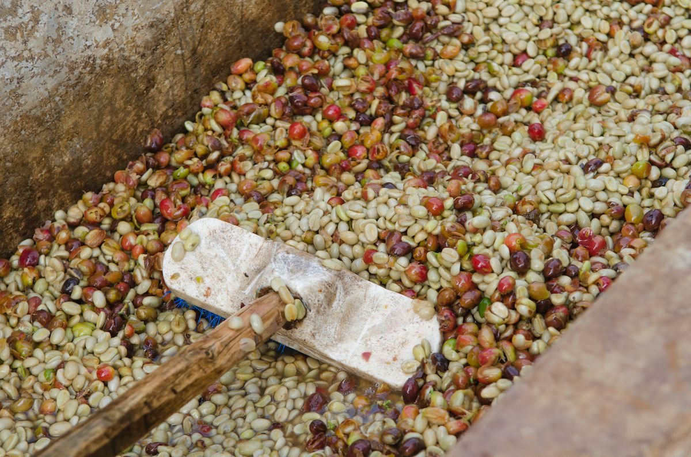
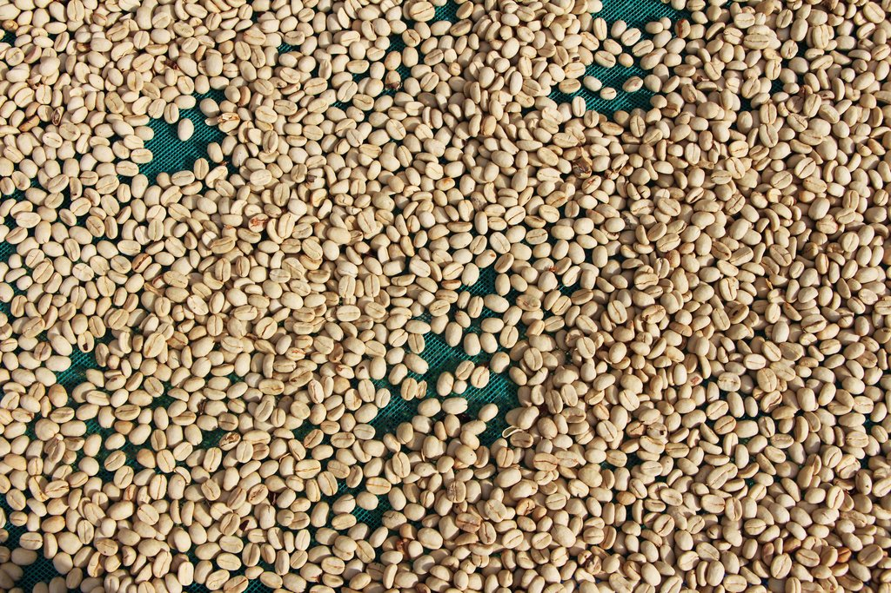
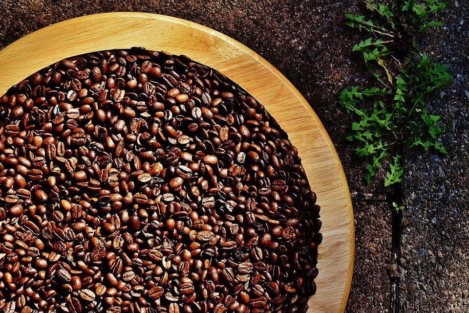
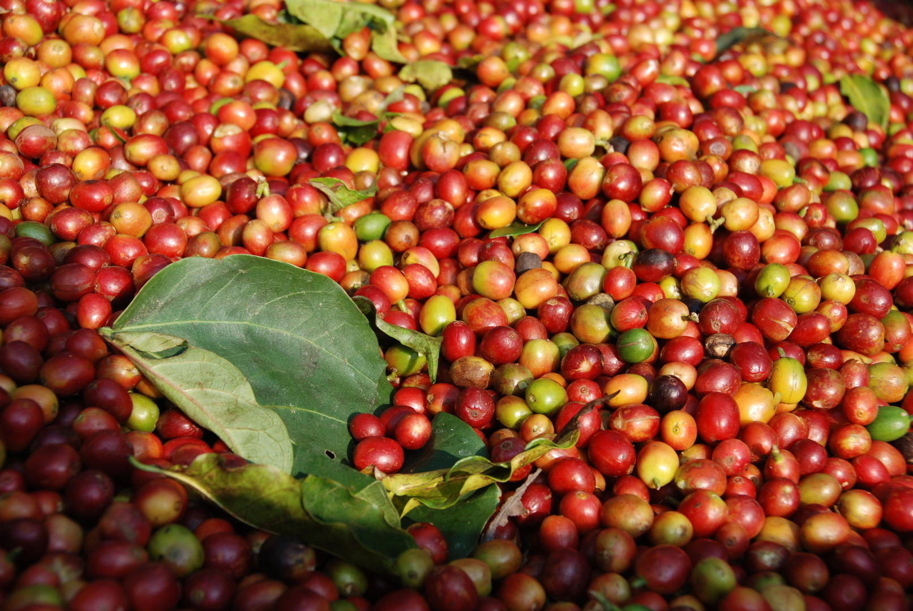

<!DOCTYPE html>
<html lang="en">
  <head>
    <meta charset="UTF-8" />
    <meta http-equiv="X-UA-Compatible" content="IE=edge" />
    <meta name="viewport" content="width=device-width, initial-scale=1.0" />
    <title>AuthenticElSalvadorCoffee</title>
    <link rel="Stylesheet" href="CoffeeProcess.css" />
    <link rel="stylesheet" href="https://cdnjs.cloudflare.com/ajax/libs/font-awesome/5.15.4/css/all.min.css" integrity=
    "sha512-1ycn6IcaQQ40/MKBW2W4Rhis/DbILU74C1vSrLJxCq57o941Ym01SwNsOMqvEBFlcgUa6xLiPY/NS5R+E6ztJQ==" crossorigin="anonymous" referrerpolicy="no-referrer" />
    <link href="https://fonts.googleapis.com/icon?family=Material+Icons" rel="stylesheet">


    <script>
      function validate() {
        var email = document.getElementById("email").value;
      
        var error_message = document.getElementById("error_message");
      
        error_message.style.padding = "10px";
      
        var text;
      
        if (email.indexOf("@") == -1 || email.length < 6) {
          text = "Please Enter valid Email";
          error_message.innerHTML = text;
          return false;
        }
      
        alert("Form Submitted Successfully!");
        return true;
      }
      </script>


  </head>
</html>
<body>
<!--header-->
    <header>
      <div class="container">
       
<!--branding-->

             <div id="branding">
                <h1>Authentic<span class="highlight"> El Salvador Coffee</h1>   
             </div>

<!--nav-->
         <nav> 
        <ul>
            <li><a href="Home.html">HOME</a></li>
            <li><a href="About.html">ABOUT</a></li>
            <li><a href="Gallery.html">GALLERY</a></li>
            <li><a href="ContactUs.html">CONTACT US</a></li>
            <br>
            <br>
            <br>
            <li class="current"><a href="Coffee Process.html">Coffee Process</a> </li>
            <li><a href="Products.html">Shop</a> </li>
            <li><a href="SignIn.html">Sign In</a></li>
            <i class="material-icons">&#xe7fd;</i>
          </ul>
         </nav>
     </div>
    </header>

    <!--Video-->

  </section>

  <section class="video">
    <video src="images/CoffeeProcessing.mp4" autoplay="" muted="" loop=""></video>
    <h4>Coffee Processing</h4>
 </section>


<!--Ginfo-->

    <section class="Ginfo">
        <div class="container">
          <div class="split">
            <div>
              <h2 class="text-left">GENERAL PROCESSING </h2>
              <p>
                After an appropriate picking and selection of the coffee bean, it is 
                transferred to the coffee processing plant for its respective pulping, 
                removal of the mucilage, drying, and threshing. We adapt to the requirements 
                of preparation of international markets such as Specialty grade, American
                and European preparation. Our warehouses are conditioned to maintain the
                highest quality standards where humidity is maintained between 10.5% to 11.5%.
                The processing methods that we currently use are: Washed, Natural and Honey,
                obtaining a parchment coffee that is then dried on African beds indoors,
                to avoid direct contact with the sun.</p>
 
             <h2 class="text-left">SEMI-WASHED</h2>

             <p>
              Unlike the washed process, the semi-washed is left to ferment for about 4 hours,
              so that the grain acquires the properties of honey from the peel, after this,
              it’s washed, and the mucilage is completely removed.
              
               </p>
               <div class="Dream">
                
               
                </div>
  

              <h2 class="text-left">WASHED</h2>

              <p>
                
              In this process, the mucilage is completely removed, and it uses a lot of water.
              After the grain has been depulped, the next step is the total removal of the mucilage,
               which it can be in two ways, mechanically or by fermentation. When is done by 
               fermentation, the parchment grain is allowed to stand in water for about 24 hours
              (This may depend on weather conditions).
             </p>


             <div class="Dream">
              
             
              </div>


            </div>
            <div>
                <h2 class="text-right">HONEY</h2>
                <p>
                  In this process, there is no use of water and the grain is depulped and left
                  to dry with the honey from the peel removed, which is completely absorbed by 
                  the coffee bean acquiring many properties of sweetness, the drying time 
                  depends on the amount of honey in the coffee, also the color of parchment grain,
                  that it can be yellow, black and red.
                </p>

                <div class="Dream">
                  
                 
                  </div>
    


                 <h2 class="text-right">NATURAL</h2>
                 <p>
                  his process is simpler, like the honey, there’s not used water, all the picked
                  grain is left to dry on African beds, with this process the coffee bean
                  acquires many properties which make it get a high content of sweetness, 
                  the storage of coffee with this process can last longer. </p>

                  <div class="Dream">
                    
                   
                    </div>
      

      
                <h2 class="text-right">QUALITY ASSURANCE</h2>

                <p>
                  All our parchment coffees are carefully reviewed to determine grains with 
                  primary or secondary defects.
                  After the coffee parchment is dried on beds, it’s stored for
                  a minimum of 30 days, so that it expresses itself, after this period,
                  it will be threshed to remove the parchment (or pulp if it’s a 
                  natural process), and then obtain coffee that we call "Oro de Chorro", 
                  which is examined by a group of workers with a high capacity developed
                  for the identification of possible defects, then the coffee is
                  classified according to the “zaranda” size of the grain
                  (size of the final raw or green coffee).
                  </p>

            </div>
          </div>
        </div>

      </section>

      <!--newsletter-->

      <section id="newsletter">
 
        <div id="error_message"></div>
        <h1>SIGN UP NOW</h1>
        <form action="" id="myform" onsubmit="return validate();">
          <input type="email" placeholder="Enter your email" id="email" />
          <button type="submit" class="button_1">Subscribe</button>
        </form>
     
    </section>
    

<!--footer-->

   
<footer class="footer">
        
  <div class="container grid">
     
      <div>
         
          <h1>AuthenticElSalvadorCoffee</h1>
          <p> Copyright &copy; 2021</p>
          
      </div>
      <div class="social">
          <a href="#"><i class="fab fa-twitter fa-x"></i></a>
          <a href="#"><i class="fab fa-facebook fa-x"></i></a>
          <a href="#"><i class="fab fa-instagram fa-x"></i></a>
          <a href="#"><i class="fab fa-github fa-x"></i></a>
          <a href="#"><i class="fab fa-linkedin fa-x"></i></a>
      </div>
  
  </div>
</footer>

  </body>
</html>
